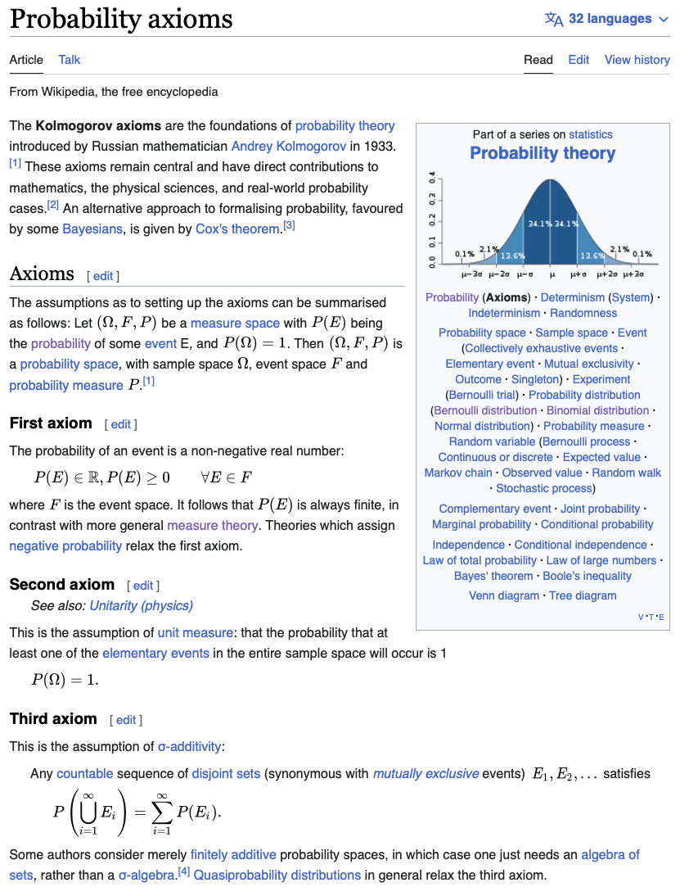

강의영상
youtube: https://youtube.com/playlist?list=PLQqh36zP38-yTpksFFUby_Twan5kFTFdm
시그마필드 motivation (2)
생각의 시간1
우리가 잴 수 있는 집합의 모임들 \({\cal F}\)라는 것은 답을 구체적으로 쓸 수는 없으나 현재까지 파악한 직관에 한정하여 아래와 같은 조건1들을 만족하는 collection이라고 “일단은” 생각할 수 있다.
- \(\Omega, \emptyset \in {\cal F}\)
- \(\forall A \subset \Omega: ~ A \in {\cal F} \Rightarrow A^c \in {\cal F}\)
- \(\forall A,B \subset \Omega\) such that \(A\cap B =\emptyset\): \(A,B \in {\cal F} \Rightarrow A \cup B \in {\cal F}\)
- \(\forall A,B \subset \Omega\) such that \(A \subset B\): \(A,B \in {\cal F} \Rightarrow B-A \in {\cal F}\)
이것은 우리가 “확률”이라는 개념을 올바르게 정의하기 위해서 필요한 최소한의 합의2이다.
여기에서 우리가 따져볼 것은 (1) 시그마필드의 조건으로 1~4이면 충분한지 (더 많은 조건들이 필요한건 아닌지) 그리고 (2) 우리가 있었으면 하는 조건들이 꼭 필요한 조건은 맞는지 (예를들면 한두개의 조건이 다른조건을 암시하는건 아닌지) 이다.
(충분할까?) 조건 1,2,3,4 정도를 만족하는 집합으로 시그마필드를 정의해도 충분할까? 좀 더 많은 조건들이 필요한건 아닐까? 예를들면 아래와 같은 조건들이 필요한건 아닌가?
- \(\forall A,B \subset \Omega:~ A,B \in {\cal F} ~ \Rightarrow A\cap B \in {\cal F}\)
- \(\forall A,B \subset \Omega:~ A,B \in {\cal F} ~ \Rightarrow A\cup B \in {\cal F}\)
- \(\forall B_1,B_2,\dots \subset \Omega\) such that \(B_1, B_2,\dots\) are disjoint: \(B_1,B_2,\dots \in {\cal F} \Rightarrow \cup_{i=1}^{\infty}B_i \in {\cal F}\)
- \(\forall A_1,A_2,\dots \subset \Omega\): \(A_1,A_2,\dots \in {\cal F} \Rightarrow \cup_{i=1}^{\infty}A_i \in {\cal F}\)
여기에서 잠시 5,6,7,8의 의미를 살펴보자.
- 3의 확장버전이라고 볼 수 있다. 3은 “각 집합을 잴 수 있다면 서로소인 집합을 유한번 더한 집합도 잴 수 있어야 한다” 라는 의미가 된다. 7은 “각 집합을 잴 수 있다면 서로소인 집합을
셀 수 있는 무한번더한 집합도 잴 수 있어야 한다” 라는 의미가 된다.
(예제11) – 람다시스템
\(\Omega=(0,2\pi]\) 라고 하자. \({\cal A} = \{\{x\}: x\in \mathbb{Q} \cap \Omega \}\) 이라고 할 때 아래가 성립할까?
\[\mathbb{Q} \cap \Omega \in \sigma({\cal A})\]
즉 각각의 유리수 한점씩을 잴 수 있을 때3 유리수 전체의 집합 역시 잴 수 있을까?
(해설1)
유리수는 셀 수 있는 무한이므로 집합 \(\mathbb{Q} \cap \Omega\)의 길이나 확률 따위는 잴 수 있다.
(해설2)
확률의 공리중 3을 살펴보면 이미 서로소인 집합의 countable union은 잴 수 있는 대상이라고 생각하고 있다. 이건 마치 “확률은 양수”이어야 한다든가, “전체확률은 1이어야” 한다는 사실처럼 당연한 사실이다.4

사실 납득이 되는건 아님. 그렇지만 일단은 “수학자들이 합의해서 이런건 잴 수 있다고 했어. 그러니까 잴 수 있어” 라고 이해하고 넘어가자.
생각의 시간2
이제 5,6의 성질을 살펴보자.
- \(\forall A,B \subset \Omega:~ A,B \in {\cal F} ~ \Rightarrow A\cap B \in {\cal F}\)
- \(\forall A,B \subset \Omega:~ A,B \in {\cal F} ~ \Rightarrow A\cup B \in {\cal F}\)
6의 경우는 \(A\)와 \(B\)가 서로소가 아니더라고 \(A \cup B\)를 잴 수 있느냐? 라는 것이다. (결국 이는 교집합을 잴 수 있느냐? 라는 물음과 같아서 5와 6은 같은 질문이다.)
(예제12) – 교집합을 넣을까 말까
\(\Omega=\{1,2,3,4\}\)라고 하자. 아래와 같은 \({\cal F}\)는 합리적일까?
\[{\cal F}= \big\{ \emptyset, \{1,2\}, \{1,3\}, \{1,4\},\{2,3\},\{2,4\},\{3,4\}, \Omega\big\}\]
(해설1) – 틀린해설
이러한 집합은 원칙 1-4,7 에 위배되지 않는다.
1. \(\Omega, \emptyset \in {\cal F}\)
2. \(\forall A \subset \Omega: ~ A \in {\cal F} \Rightarrow A^c \in {\cal F}\)
3. \(\forall A,B \subset \Omega\) such that \(A\cap B =\emptyset\): \(A,B \in {\cal F} \Rightarrow A \cup B \in {\cal F}\)
4. \(\forall A,B \subset \Omega\) such that \(A \subset B\): \(A,B \in {\cal F} \Rightarrow B-A \in {\cal F}\)
7. \(\forall B_1,B_2,\dots \subset \Omega\) such that \(B_1, B_2,\dots\) are disjoint: \(B_1,B_2,\dots \in {\cal F} \Rightarrow \cup_{i=1}^{\infty}B_i \in {\cal F}\)
그런데 이 집합은
\[\{1,2\} \cap \{1,3\} = \{1\}\]
와 같은 집합이라든가,
\[\{1,2\} \cup \{1,3\} = \{1,3,4\}\]
와 같은 집합의 길이를 잴 수 없다. 따라서 아래와 같이 우리가 고등학교때 부터 써왔던 공식을 쓸 수 없다. (ref, Further consequences)
\[P(A\cup B) = P(A) + P(B) - P(A\cap B)\]
이것은 불편하니까 \(A,B\)가 잴 수 있다면, \(A,B\)의 교집합이나 합집합따위도 잴 수 있다고 정하자.
(해설1의 반론)
약속하지 않으면 “불편”하니까 약속하자라는 논리는 말이 되지 않음. 그 논리대로라면 \(\Omega\)의 모든 집합에 대하여 확률을 정의할 수 없다고 하면 “불편”하니까 약속하자라는 논리가 됨. 잴 수 있는 집합의 합집합이나 교집합을 잴 수 있다라는 근거는 없음.
(해설1의 반론의 반론) – 참고용으로만..
사실 근거가 있긴함. 즉 \(A\)와 \(B\)를 각각 잴 수 있다면 \(A\), \(B\)의 교집합도 잴 수 있음. (그렇다면 자동으로 합집합도 잴 수 있게 됨.) 이것을 지금 수준에서 엄밀하게 따지기 위해서는 “잴 수 있는 집합”의 정의를 해야하는데 지금 수준에서는 까다로움.
(해설2) – 엄밀한 해설 X
잴 수 있는 집합을 우리는 지금 까지 당연하게
- 확률을 잴 수 있는 집합들
로 생각했음, 그런데 원래 잴 수 있는 집합이라는 개념은 “선분의 길이” 따위를 모순없이 정의할 수 있는가? 즉 수직선 \(\mathbb{R}\)의 모든 부분집합의 길이라는 개념을 정의할 수 있는가? 에서 출발하였음. 즉 원래 잴 수 있는 집합이라는 의미는
- 수직선에서 길이를 잴 수 있는 집합들
이라고 생각해야함. 그렇다면 “길이”라는 개념을 다시 추상화 해야하는데 “길이”라는 개념은 아래의 원칙에 위배되면 안될 것 같음.

교집합을 잴 수 없다는 논리라면, 구간 \([a_1,b_1]\)의 길이는 잴 수 있고 구간 \([a_2,b_2]\)의 길이는 잴 수 있지만 구간 \([a_1,b_1] \cap [a_2,b_2]\)의 길이는 잴 수 없다는 말인데 이는 말이되지 않음.
결론 (엄밀한 해설은 아님): “잴 수 있다” 라는 개념은 확률, 길이에 모두 적용할 수 있어야 한다. 잴 수 있는 대상을 확률로 상상하면 \(A \in {\cal F} \Rightarrow A^c \in {\cal F}\) 인것이 당연하듯이 잴 수 있는 대상을 길이로 상상하면 \(A,B \in {\cal F} \Rightarrow A \cap B \in {\cal F}\) 임은 당연하다.
생각의 시간3
따라서 아래의 성질들은 모두 시그마필드가 가져아할 규칙들로 인정할 수 있다.
- \(\Omega, \emptyset \in {\cal F}\)
- \(\forall A \subset \Omega: ~ A \in {\cal F} \Rightarrow A^c \in {\cal F}\)
- \(\forall A,B \subset \Omega\) such that \(A\cap B =\emptyset\): \(A,B \in {\cal F} \Rightarrow A \cup B \in {\cal F}\)
- \(\forall A,B \subset \Omega\) such that \(A \subset B\): \(A,B \in {\cal F} \Rightarrow B-A \in {\cal F}\)
- \(\forall A,B \subset \Omega:~ A,B \in {\cal F} ~ \Rightarrow A\cap B \in {\cal F}\)
- \(\forall A,B \subset \Omega:~ A,B \in {\cal F} ~ \Rightarrow A\cup B \in {\cal F}\)
- \(\forall B_1,B_2,\dots \subset \Omega\) such that \(B_1, B_2,\dots\) are disjoint: \(B_1,B_2,\dots \in {\cal F} \Rightarrow \cup_{i=1}^{\infty}B_i \in {\cal F}\)
남은건 8번의 규칙이다.
- \(\forall A_1,A_2,\dots \subset \Omega\): \(A_1,A_2,\dots \in {\cal F} \Rightarrow \cup_{i=1}^{\infty}A_i \in {\cal F}\)
이 85번 규칙은 사실 56, 77번 잘 조합하면 자동으로 이끌어진다. 즉 \((5), (7) \Rightarrow (8)\). 그 외에도 “있었으면 싶은” 규칙은 모두 1-7중 적당한 것을 섞으면 만들 수 있다. 예를들어 아래와 같은 규칙을 고려하자.
- \(\forall A,B \subset \Omega:~ A,B \in {\cal F} \Rightarrow A-B \in {\cal F}\)
- \(\forall A,B,C \subset \Omega: A,B,C \in {\cal F} \Rightarrow A\cup B \cup C \in {\cal F}\)
- \(\forall A_1,A_2,\dots \subset \Omega\): \(A_1,A_2,\dots \in {\cal F} \Rightarrow \cap_{i=1}^{\infty}A_i \in {\cal F}\)
규칙9는 규칙28와 59로 임플라이 할 수 있고, 규칙10은 규칙610의 확장으로 임플라이 할 수 있고, 규칙11은 규칙 211와 712로 임플라이 할 수 있다.
결론: 규칙 1-8으로 시그마필드를 표현하기에 충분하다.
생각의 시간4
규칙 1-8중 필요없는 규칙을 제거하자.
1. 규칙213가 있다면, 규칙1에서 공집합은 빼도 될 것 같다.
2. 규칙814이 있다면, 규칙315, 규칙616, 규칙717은 필요 없다. 즉 규칙8은 규칙3,6,7의 효과를 모두 가진다.
3. 규칙218와 규칙619이 있다면, 규칙520는 필요없다. 따라서 규칙221와 규칙822이 있어도 규칙5는 필요없다.
4. 규칙223와 규칙524가 있다면 규칙425는 필요없다. 그런데 규칙5는 규칙2와 규칙826이 임플라이 하므로 결국 규칙2와 규칙8이 있다면 규칙4가 필요없다.
5. 결론: 규칙1에서 공집합을 제외한 버전, 그리고 규칙2, 규칙8만 있으면 된다.
시그마필드의 정의
- 시그마필드, 즉 \(\Omega\)의 부분집합 중 “잴 수 있는 집합의 모임”은 Durret 교재에 의하여 아래와 같이 정의된다.
- 교재에는 \(\Omega \in {\cal F}\)이라는 조건이 빠져있는데, \(\Omega \in {\cal F}\)이라는 조건을 포함하여 기억하는 것이 편리하다. (위키등에서 일반적으로 정의할때는 \(\Omega \in {\cal F}\) 조건을 포함한다) 즉 위키와 Durret을 적당히 혼합하여 아래와 같이 정의하고 기억하는게 좋다.
(Def) Let \(\Omega\) be some set, and let \(2^{\Omega}\) represent its power set. Then a subset \({\cal F} \subset 2^\Omega\) is called a \(\sigma\)-field if it satisfies the following three properties:
- \(\Omega \in {\cal F}\)
- \(A \in {\cal F} \Rightarrow A^c \in {\cal F}\)
- \(A_1,A_2,A_3\dots \in {\cal F}\) \(\Rightarrow\) \(\cup_{i=1}^{\infty}A_i \in {\cal F}\)
- 좀 더 편리하게 아래와 같이 기억하면 좋다.
시그마필드는 잴 수 있는 집합의 모임인데 아래와 같은 규칙을 만족해야 한다. (1) 전체집합을 포함한다. (2) 여집합에 닫혀있다. (3) 가산합집합에 닫혀있다.
- 참고1: 시그마필드라는 것은 유일하게 정의되지 않는다. 즉 동일한 \(\Omega\)에 대하여 정의할 수 있는 잴수있는 집합의 모임 \({\cal F}\)는 유일하지 않다.
- 참고2: 시그마필드는 \(\Omega\)없이 단독으로 정의되지 않는다. 즉
\[{\cal F}=\{\emptyset, \{H\}, \{T\}, \{H,T\}\}\]
는 단지 그냥 시그마필드라고 주장하기 보다 \(\Omega=\{H,T\}\)에 대한 시그마필드라고 해야 정확한 표현이다.
- 참고3: 참고2에 따라서 \({\cal F}\) 단독으로 표기하는 것 보다 \(\Omega\)를 붙여서 \((\Omega,{\cal F})\)와 같이 쌍으로 표기하는게 더 합리적이다. 앞으로는 이러한 쌍을 measurable space 라고 부른다.
확률의 정의
- 지금까지의 이야기.
- \(\Omega\)의 모든 부분집합에 대해서 확률을 “무모순”으로 정의하는게 엄청 쉬운일 인줄 알았는데,27
- 사실은 그렇지가 않았다.28 확률을 정의하는건 매우 까다로운 일이었다.
- 이러한 까다로움을 해결하기 위해서 “르벡메져”라는 새로운 도구를 사용했다. 이 도구는 몇 가지 까다로운 집합에 대하여 확률을 무모순으로 정의할 수 있었다.
- 르벡메져는 구간 \([0,2\pi)\)의 모든 유리수 집합의 길이와 구간 \([0,2\pi)\)의 모든 무리수 집합의 길이를 다르게 정의하는 신기한 방식을 사용하는데, 이러한 방식을 납득하기 위한 최소한의 노력으로 “셀 수 있는 무한”과 “셀 수 없는 무한”의 개념을 공부했다.
- 하지만 르벡메져를 통해서도 \(\Omega\)의 모든 부분집합에 대하여 길이를 잴 수 없는 집합29이 존재함이 밝혀졌다.
- 따라서 \(\Omega\)의 모든 부분집합에 대해서 확률을 “무모순”으로 정의하는 일은 포기하였다.
- 대신에 \(\Omega\)의 부분집합 중, 잴 수 있는 집합들에 대해서만 확률을 “무모순”으로 정의하는 일을 시도했다.
- 이 잴 수 있는 집합들의 모임을 시그마필드라 칭하고 기호로는 \({\cal F}\)라고 정의하였다.
- 이제 하고 싶은 것
시그마필드에서 확률을 정의하자! \(\Leftrightarrow\) 시그마필드를 정의역으로 하는 “확률”이라는 이름의 함수를 정의하자.
- 확률의 정의: 메져(measure)는 길이따위를 일반화한 개념이다. 확률은 메져의 특수한 형태이다.30메져와 확률은 아래와 같이 정의한다.

사실 잘 따져보면 이것은 우리가 아까 위키에서 찾아본 확률의 공리와 일치한다.

- 중요한 것: 확률은 “함수”이고 정의역이 “시그마필드”라는 것만 기억하면 된다. 즉 아래의 사실만 잘 이해하고 기억하면 된다.
적당한 가측공간 \((\Omega, {\cal F})\)이 있다고 하자. 확률 \(P\)는 정의역이 \({\cal F}\)이며 치역이 \([0,1]\)인 함수이다.
- 암기!! \(P: {\cal F} \to [0,1]\)
확률변수의 정의 (1)
불완전한 정의
- 확률변수: \(X:\Omega \to \mathbb{R}\)인 조금 특별한 성질을 가진 함수
- 정의역: \(\Omega\)
- 치역: \(\mathbb{R}\)
(예제1) 동전예제
1. outcomes31: \(H\),\(T\).
2. sample space: \(\Omega = \{H,T\}\)
3. event32: \(\emptyset\), \(\{H\}\), \(\{T\}\), \(\{H,T\}\).
4. \(\sigma\)-field: \({\cal F}=\) \(\Omega\)의 모든 부분집합의 모임
5. probability measure function: \(P: {\cal F} \to [0,1]\) such that
- \(P(\emptyset) = 0\)
- \(P(\{H\}) = \frac{1}{2}\)
- \(P(\{T\}) = \frac{1}{2}\)
- \(P(\Omega) = 1\)
6. random variable: \(X: \Omega \to \mathbb{R}\) such that
- \(X(H)=1\)
- \(X(T)=0\)
만약에 편의상 \(\Omega=\{H,T\}=\{\omega_1,\omega_2\}\)와 같이 사용한다면
- \(X(\omega_1)=1\)
- \(X(\omega_2)=0\)
헷갈려 (1) (\(\star\star\star\))
- 질문1: 아래의 표현 중 옳은 것은?
- \(X(H)=0\)33
- \(P(\{H\})=\frac{1}{2}\)34
- \(P(\{\omega_1\})=\frac{1}{2}\)35
- \(P(H)=\frac{1}{2}\)36
- \(P(\{H,T\})=1\)37
- \(P(\omega_1)=\frac{1}{2}\)38
- 질문2: 질문1의 4번의 표현을 많이 본적 있다. 예를들어서 고등학교에서 두 사건의 독립에 대해 배울때 아래와 같은 방식으로 표현했었다. // 출처: 네이버 블로그
두 사건 \(A\), \(B\)에 대하여 \(P(B|A) =P(B|A^c) =P(B)\) 이면 두 사건이 독립이라고 한다~~
그렇다면 이 표현은 틀린걸까?
(해설)
여기에서 사건 \(A\), \(B\)는 event을 의미하며 outcome을 의미하는게 아님. 즉 \(A\), \(B\)는 집합임.
암기: 확률은 항상 집합을 입력으로 받아야 함!!
- 질문3(\(\star\star\star\)): 수리통계 시간에서 아래와 같은 표현 본 적 있다.
\[P(X=1)=\frac{1}{2}\]
그런데 \(P\)의 입력으로는 집합이 들어가야하는데, \(X=1\)은 그냥 수식임. 그렇다면 이 표현은 틀린 표현일까??
(해설)
사실 \(P(X=1)\)의 의미는 아래와 같은 표현의 축약형이다.
\[P\big(\{\omega: X(\omega)=1 \} \big)\]
\(\{\omega: X(\omega)=1\} = \{\omega_1\} = \{H\}\) 를 의미하므로 결국
\[P(X=1)=P(\{\omega: X(\omega)=1\})=P(\{H\})\]
이 된다. 따라서 옳은 표현이다.
확률변수에 대한 통찰 (1)
- 아래와 같은 표현을 다시 관찰하자.
\[P(X=1)=P(\{\omega: X(\omega)=1\})=P(\{H\})\]
통찰1. 확률변수가 “함수”라는 사실을 떠올리고 \(1\)이라는 값이 확률변수의 “상(image)” 라는 사실을 떠올리면, \(\{\omega: X(\omega)=1\}\)은 1에 대한 “역상(inverse image)”이라고 해석할 수 있다.39
통찰2. 확률변수의 상은 \(\mathbb{R}\)에 맺히게 되고, 확률변수의 역상은 \(\Omega\)의 부분집합 중 하나에 맺히게 된다.
통찰3. 문제는 확률변수의 역상이 항상 잴 수 있는 집합에 맺힌다는 보장이 있냐라는 것이다… 즉 이 예제로 한정하면
\[\{\omega: X(\omega)=1\} \in {\cal F}\]
임을 보장해야 한다는 것이다.
통찰4. 당연히 이러한 보장을 할 수는 없어보인다. 따라서 \(X\)를 단지 그냥
- \(X: \mathbb{\Omega} \to \mathbb{R}\)로 가는 함수
가 아니라
- \(X: \mathbb{\Omega} \to \mathbb{R}\)로 가는 함수 & 역상이 항상 잴 수 있는 집합이어야 함.
이라는 조건이 필요하다.
- 역상이 잴 수 있는 집합인 함수를 간단히 잴 수 있는 함수 (measurable function) 라고 한다.
Footnotes
이 조건들은 수정 및 보완 될 예정임↩︎
모든 사람들이 인정할 수 밖에 없는 합의↩︎
\(P(\{0\})\), \(P(\{0.21\})\), \(\dots\)를 각각 정의가능할 때↩︎
사실 일반인에게 당연하지 않을 수도 있지만 최소한 수학자들은 당연하게 생각한다. 그래서 우리도 그냥 당연하게 생각하자.↩︎
countable union↩︎
교집합↩︎
서로소의 countable union↩︎
여집합↩︎
교집합↩︎
2개 집합의 합집합↩︎
여집합↩︎
서로소의 countable union↩︎
여집합↩︎
countable union↩︎
disjoint union of two sets↩︎
2개의 합집합↩︎
countable union of disjoint sets↩︎
여집합↩︎
합집합↩︎
교집합↩︎
여집합↩︎
countable union↩︎
여집합↩︎
교집합↩︎
포함관계의 차집합↩︎
countable union↩︎
동전예제↩︎
바늘이 하나 있는 시계예제↩︎
비탈리집합↩︎
메져의 조건에서 전체집합의 길이가 1이라는 제약만 있음↩︎
outcome 자체는 집합을 의미하는게 아님↩︎
event는 집합을 의미↩︎
O↩︎
O↩︎
O↩︎
X↩︎
O↩︎
X↩︎
참고로 image는 수학책에서 3가지 뜻으로 혼용해서 쓰이는데, 이 문맥에서는 “Image of an element”를 의미함. ref↩︎